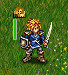

Tartalom
- Előszó
- 1. Kezdésként
- 2. Játék közben
- 3. Stratégia és tippek
- 3.1. Alapvető stratégia
- 3.1.1. Ne pazarold az egységeket
- 3.1.2. Maradj az ellenség hatókörén kívül
- 3.1.3. Használd pajzsként az ellenőrzött területeidet (ET)
- 3.1.4. Gondoskodj a védelmi vonalakról
- 3.1.5. Cserélgesd a fronton lévő harcosaidat
- 3.1.6. Használd ki a terepviszonyokat
- 3.1.7. Támadás és a célpontok kiválasztása
- 3.1.8. Napszak
- 3.1.9. Tapasztalat
- 3.2. Tedd még szórakoztatóbbá a játékot
A táblázatok listája
- 2.1. Általános irányítások és gyorsbillentyűk
- 2.2. Egységekkel és körkezeléssel kapcsolatos gyorsbillentyűk
- 2.3. Lépéstervezővel kapcsolatos gyorsbillentyűk
- 2.4. Többjátékos mérkőzéssel kapcsolatos gyorsbillentyűk
- 2.5. Egyéb gyorsbillentyűk
- 2.6. Egyéb gyorsbillentyűk
- 2.7. Pandorára jellemző irányítások és gyorsbillentyűk
- 2.8. A napszakok sebzésre gyakorolt hatásai
- 2.9. A különböző szintű ellenfelekkel folytatott harcok során szerzett tapasztalati pontok
- 2.10. Gömböcskék
A Harc Wesnothért egy körökre osztott stratégiai játék fantasy témával.
Hozz létre egy ütőképes hadsereget, miközben a zöldfülű újoncaid fokozatosan kemény veteránokká válnak. A későbbi játékokban hívd vissza a legkeménykötésűbb harcosaid, és építs egy olyan halálos sereget, amelynek senki sem tud ellenállni! Toborozz az egységek széles választékából, és hozz létre saját kezűleg egy olyan haderőt, mely bármely terepen bármely ellenféllel eredményesen tud megküzdeni.
Wesnoth rengeteg különböző mondája vár felfedezésre. Orkokkal, élőholtakkal, vagy banditákkal küzdhetsz meg Wesnoth Királyságának mezején; harcolj sárkányok oldalán a fenséges ormokon, tündék mellett Aethenwood zöld erdeiben, törpökkel Knalga óriási termeiben, vagy akár még a sellők népével karöltve is a Gyöngyök Öblében. Harcolhatsz Wesnoth trónjának visszaszerzéséért, vagy használhatod félelmetes erődet az élőholtak oldalán, hogy meghódítsd a halandók földjét. Ha úgy tetszik, vezesd büszke ork törzsedet a győzelemre az emberek ellen, kik ki merészelték fosztani a földjeidet.
Lehetőséged lesz több, mint kétszáz egységtípus közül választani (a gyalogság, lovasság, íjászok és mágusok csak a kezdet), és olyan feladatokkal megbirkózni, mint a kis csapatokban végrehajtott rajtaütések, vagy az óriási hadseregek megütközése. Ezenkívül megmérkőzhetsz barátaiddal – vagy idegenekkel –, és harcolhatsz gigászi többjátékos csatákban.
A Harc Wesnothért egy nyílt forráskódú program, melynek fejlesztésében az önkéntes közreműködők virágzó közössége vesz részt. Te is készíthetsz új egységeket, írhatsz saját pályákat vagy akár teljes hadjáratokat is. A felhasználók által karbantartott tartalmak letölthetők a kiegészítőket kezelő kiszolgálóról, de a legjobbak be vannak építve a Harc Wesnothért hivatalos kiadásaiba is.
A Nagy Kontinens ismert részét, amelyen Wesnoth elterül, általában három nagy tájegységre osztják: Északfölde, amely nagyrészt törvényen kívüli vidék; Wesnoth Királysága és hercegsége, Elensefar; a délnyugati tündék birodalma az Aethenwoodi-erdőben és azon túl.
Wesnoth Királysága ennek a földnek a közepén fekszik. Határai északon a Nagy-folyó, keleten és délen a Dulatus-dombság, délnyugaton az Aethen-erdő széle, nyugaton pedig az óceán. Elensefart, Wesnoth egykori provinciáját, északon a Nagy-folyó határolja, keleten egy lazán megszabott vonal Wesnoth felé, délen a Gyöngyök Öble, míg nyugaton az óceán.
Északfölde a Nagy-folyótól északra lévő vad vidék. Különböző ork, törp, barbár és tünde nemzetségek lakják ezt a területet. Innen északra és keletre Lintanir erdeje terül el, ahol az északi tündék birodalma van; lakói folyton a titokzatos ügyeikkel vannak elfoglalva.
A vidéken szétszórva falvak találhatóak, ahol felgyógyíthatod katonáidat, és a sereged fenntartásához szükséges bevételeket is összegyűjtheted. Hegyeken kell átvágnod, folyókon kell átkelned, keresztül kell verekedned magad erdőségeken, dombokon, tundrán, és át kell nyargalnod nyílt síkságokon is. Mindegyik területhez más teremtmény alkalmazkodott, mely sokkal ügyesebben tud küzdeni és gyorsabban tud mozogni azoknál, akik nem ismerősek az adott vidéken.
Wesnoth világában emberek, tündék, törpök, orkok, perzsekények, gyíkok, sellők, nagák és még sok más, még titokzatosabb és csodálatosabb faj él. Az elátkozott földeken élőholtak, szellemek és lidércek bolyonganak; a romok körül és a börtönök mélyén szörnyek ólálkodnak. Mindegyikük meghatározott környezethez alkalmazkodott. Az emberek elsősorban a mérsékelt éghajlatú síkságokon élnek. A hátságokon, hegyekben és a föld alatti barlangokban az orkok és a törpök érzik otthon magukat. Az erdőket a tündék tartják kezükben. Az óceánok és folyók felett a sellők és a nagák uralkodnak.
A fajok különböző szövetségekbe csoportosulnak, hogy a játék még élvezetesebb legyen; például az orkok gyakran működnek együtt a trollokkal, a tündék pedig a törpökkel vagy az emberekkel. Más szövetségek az emberi társadalomban lévő szakadásokat tükrözik – például a hűségesek és a törvényen kívüliek közötti ellentétet. A legtöbb hadjárat során olyan egységeket fogsz irányítani, melyek egy szövetségbe tartoznak. Ám néha a szövetségek alkut kötnek egymással, így meglehet, hogy néha több, mint egy szövetséggel kell szembenézned egy küldetés során.
Amikor a Wesnoth először indul el, egy kezdő háttér és egy gombokból álló oszlop jelenik meg, amit Főmenünek neveznek. A gombok kizárólag az egérrel működnek. A türelmetleneknek a következőt ajánljuk: kattints a „Nyelv” gombra, hogy beállíthasd a nyelved; ezután kattints a „Gyakorlás” gombra, hogy elindíthasd a gyakorlópályát; ezt követően játssz a „Két fivér meséje” című hadjárattal úgy, hogy rákattintasz a „Hadjáratok” gombra, és kiválasztod az ott felajánlott listából.

- Gyakorlás
- A gyakorlópálya egy igazi, de egyszerű játék, mely segítségével a játékhoz nélkülözhetetlen alapvető irányítási tudnivalók sajátíthatóak el. Nem számít, hogy győzöl, vagy veszítesz, hanem csak az, hogy megtanuld, mit is kéne tenni. Kattints a „Gyakorlás” gombra, hogy játszhass. A gyakorlópályán Konrad herceg, vagy Li’sar hercegnő bőrébe bújsz, és a vén Delfador mágustól tanulsz – figyelj oda, különben békává változtathat!
- Hadjárat
- A Harc Wesnothért alapvetően arra készült, hogy hadjáratokat lehessen vele játszani. A hadjáratok összefüggő küldetések sorozatai. Kattints erre a gombra új hadjárat indításához. Egy lista fog feltűnni, melyen a gépeden megtalálható hadjáratok láthatóak (továbbiakat is letölthetsz, ha szeretnél). Válaszd ki a hadjáratod, majd kattints a „Rendben” gombra a kezdéshez, vagy a „Mégse” gombra a kilépéshez. Mindegyik hadjáratnak megvan a maga nehézségi szintje: könnyű, közepes (átlagos), és nehéz. Az átlagos szintet ajánljuk, mivel ez kihívásokat tartogat, mégsem túl bonyolult. Később a hadjárat közben nincs lehetőség a nehézségi szint átállítására. Ha könnyű fokozaton komoly gondjaid akadnak, akkor az Alapvető stratégiák útmutató biztosan segítségedre lesz. Miután kiválasztottad a nehézségi fokozatot, azonnal elkezdődik a hadjárat első pályája.
- Többjátékos
- Kattints erre a gombra, hogy egyszerű küldetéseket játszhass egy vagy több ellenféllel. A játékokat az interneten/hálózaton keresztül játszhatod, de lehetőséged van hálózat nélkül is csupán a saját gépedet használva megbirkózni az emberi vagy MI ellenfelekkel. Amikor kiválasztod ezt a gombot, egy párbeszédablak fog megjelenni, mely lehetővé teszi számodra, hogy eldöntsd, milyen módon akarod a küldetést végigjátszani. Ha többet szeretnél megtudni, nézd meg a küldetéseket.
- Betöltés
- Kattints erre a gombra az előzőleg elmentett játékok betöltéséhez. Egy ablak fog megjelenni, melyen az elmentett játékok listáját láthatod. Válaszd ki a játékot, majd kattints a „Rendben”-re a betöltéshez, vagy a „Mégse” gombra a Főmenübe való visszatéréshez. Ha a játék visszajátszását választod, akkor jelöld be a „Visszajátszás mutatása” négyzetet. Ebben az esetben végignézheted a kezdés óta megtett összes lépést.
- Kiegészítések
- Kattints erre a gombra, ha csatlakozni szeretnél ahhoz a kiszolgálóhoz, melyen rengeteg olyan tartalom található, melyet a Hozzád hasonló játékosok készítettek. Ezek között fellelhető számos hadjárat, többjátékos pálya és többjátékos korszak (melyek a többjátékos játszmák szövetségi rendszerét határozzák meg). A „Kiegészítések eltávolítása” gombbal eltávolíthatod bármelyiket, amelyikre már nincs szükséged.
- Szerkesztő
- Kattints erre a gombra a térképszerkesztő elindításához, mely segítségével kedved szerinti térképeket hozhatsz létre. Ezeket fölhasználhatod többjátékos játszmákhoz, vagy akár a saját hadjáratod elkészítéséhez is.
- Nyelv
- Kattints erre a gombra, ha a saját nyelved szeretnéd kiválasztani, majd kattints a „Rendben”-re a használathoz, vagy a „Mégse” gombra a jelenlegi nyelvvel való folytatáshoz. Az első alkalommal, amikor a Harc Wesnothért elindul, az alapértelmezett nyelv az angol, vagy az a nyelv, amely a rendszered alapértelmezése (amennyiben ez meghatározható). Ha ezt a beállítást egyszer megváltoztatod, a játék azontúl az adott nyelven fog elindulni.
- Beállítások
- Kattints ide, hogy megváltoztathasd az alapértelmezett beállításokat.
- Készítők
- Kattints erre a gombra, ha meg szeretnéd tekinteni a Wesnoth fejlesztéséhez leginkább hozzájáruló emberek listáját. Valós időben is gyakran elérheted őket az irc.freenode.org:6667 kiszolgáló #wesnoth szobájában.
- Kilépés
- Kattints erre a gombra, ha ki szeretnél lépni a Wesnothból
- Segítség
- Kattints erre a gombra a játékba épített súgó megnyitásához. Ez az egységekről és a játékmenet minden egyéb fontos mozzanatáról tartalmaz információkat. Ezen dolgok legtöbbjét ez a kézikönyv is megemlíti.
- Következő
- Kattints erre a gombra, hogy elolvashasd a következő kis tippet a „Wesnoth Taktikai Útmutató”-ból.
- Előző
- Kattints erre a gombra, hogy elolvashasd az előző kis tippet a „Wesnoth Taktikai Útmutató”-ból.
Két alapvető játékmód van a Wesnothban:
- Játssz egy összefüggő küldetésekből álló sorozatot – más néven hadjáratot – a gép ellen.
- Játssz egy egyszeri küldetést gép vagy emberi játékosok ellen.
A hadjáratok csaták sorozatai, melyeket egy összefüggő történet köt össze. Egy átlagos hosszúságú hadjárat körülbelül 10-20 küldetésből áll. A hadjáratok legfőbb előnye, hogy lehetővé teszik a sereged fejlődését. Miközben teljesíted az egyes küldetéseket, a megmaradt egységeid el lesznek mentve a pályák végén, hogy visszahívhasd őket a későbbi küldetések során. Amennyiben úgy döntesz, hogy egy egységet egyáltalán nem hívsz vissza a küldetés alatt, akkor az át lesz emelve a következőbe, tehát egyetlen nem használt egységet sem vesztesz el.
A Wesnothot alapvetően hadjáratokkal célszerű játszani, valószínűleg így a legélvezetesebb; a játék ezen formája javasolt az új játékosoknak is, mivel így könnyedén elsajátíthatják a szabályokat.
Egy egyszerű küldetés lejátszása nagyjából 30-120 percet vesz igénybe. Ez a játék leggyorsabb módja, de a megmaradt egységeid nem kerülnek át a következő pályára, és nem lehet a legtöbb hadjáratra jellemző extra egységeket sem használni. Küldetéseket játszhatsz a gép vagy más játékosok ellen az interneten keresztül, vagy hálózati kapcsolat nélkül is a saját számítógépeden. A küldetéseket a „Többjátékos” gomb megnyomásával érheted el a főmenüből.
A többjátékos küldetéseket általában az interneten keresztül (vagy helyi hálózaton [LAN, WLAN], ha van olyanod) szokták játszani. Az összes ilyen játékot a Wesnoth többjátékos kiszolgálón keresztül koordináljuk. A többjátékos küldetések akár 1-10 órán át is eltarthatnak a játékosok számától és a pálya méretétől függően. Az átlagos idő 3 és 7 óra között mozog. A játékokat el lehet menteni, majd később újra betölteni, amennyiszer csak a játékosok úgy akarják. Így tehát lehetséges, hogy néhány játék 1 vagy 2 hétig eltart még akkor is, ha a tényleges játékidő csak néhány óra. Többjátékos játszmákban nem tudsz egységeket átvinni egyik küldetésből a másikba, tehát sereged erejének felépítése csak az adott küldetésen belül lehetséges.
Több lehetőség közül is választhatsz, ha a „Többjátékos” gombra kattintasz:

Ez lesz a neved a többjátékos kiszolgálón. Ha regisztráltál a Wesnoth fórumon, az ott megadott felhasználóneveddel is csatlakozhatsz a hivatalos kiszolgálóhoz a jelszavad megadása után. Egy jelszódoboz fog feltűnni, ha az adott felhasználónévhez szükség van jelszó megadására. Jelszó megadása nélkül nem lehet regisztrált nevet használni.
Ezt a lehetőséget választva közvetlenül kapcsolódsz a hivatalos kiszolgálóhoz. Egy játékcsarnokban fogod találni magad, ahol tetszőlegesen hozhatsz létre új játékokat, vagy választhatsz már meglévő játékok betöltetlen helyei közül. Valószínűleg már lesz ott néhány játékos, aki épp arra vár, hogy egy új játszmához csatlakozhasson.
Ezt a lehetőséget választva egy párbeszédablak bukkan fel, melyben megadhatod egy tetszőleges gép címét, melyhez csatlakozni szeretnél. Az ablakban látható egy „Lista megtekintése” feliratú gomb is, mely azon hivatalos kiszolgálók listáját hozza elő, melyek tartalékként használhatók, ha a főkiszolgáló épp nem elérhető.
A hivatalos és felhasználók által üzemeltetett kiszolgálók teljes listája a következő oldalon található meg: Többjátékos kiszolgálók.
Ezen menüpont használatával tudod elérni a más játékosok által üzemeltetett kiszolgálókat is. Ha fut egy kiszolgáló a helyi hálózatodon, csak írd be a címét és a portszámot (alapértelmezetten: 15000). Ha például csatlakozni szeretnél az alapértelmezett porton keresztül egy kiszolgálóhoz, mely a 192.168.0.10 című gépen fut, akkor írd be a párbeszédablakba ezt: 192.168.0.10:15000
Ahhoz, hogy egy többjátékos játszmát tudj létrehozni külső kiszolgáló használata nélkül, el kell indítanod egy saját kiszolgálót, amelynek a neve általában wesnothd. A menüpont választásakor ez a program automatikusan elindul a háttérben, és egészen addig fut, míg az összes játékos el nem hagyja a kiszolgálót. A többi játékosnak a 15000-es TCP portodon keresztül kell csatlakoznia, hogy játszhassanak veled az általad létrehozott kiszolgálón. Hogyha tűzfal mögött van a géped, valószínűleg meg kell változtatnod a beállításait, hogy engedélyezze a bejövő kapcsolatokat a 15000-es TCP porton, és meg kell adnod, hogy irányítsa az ilyen adatforgalmat a kiszolgálót futtató gépedhez. Ha egy nyilvános kiszolgálóhoz, vagy egyéb (nem a te gépeden futó) kiszolgálókhoz csatlakozol, akkor nem szükséges a tűzfalad beállításait megváltoztatni.
Ennek segítségével egy olyan játékot hozhatsz létre, melyhez a te gépeden kívül nincs szükség más számítógépekre. Játszhatsz hotseat játékot, mely során mindenki egyazon gépen játszik úgy, hogy ki-ki a saját hotseat idején lejátssza a körét, majd átadja a széket másnak. A hotseat játékok körülbelül ugyanannyi időt vesznek igénybe, mint az interneten játszott mérkőzések. Ezenkívül játszhatsz csupán MI ellenfelekkel ahelyett, hogy emberek lennének az ellenfeleid. Ez kiváló módja annak, hogy megismerkedj azokkal a pályákkal, melyekkel legtöbbször többjátékos módban szoktak játszani, még mielőtt valódi ellenfelekkel mérkőznél meg. A helyi játékot ezen túlmenően használhatod egyszerűen arra is, hogy kiderítsd a különböző fajok egységeinek képességeit azáltal, hogy kiválasztod azt a fajt, amelyikkel játszani fogsz, és azokat is, melyek ellenfeleid lesznek a játszmában. Természetesen mindezen lehetőségeket egy játékon belül egyszerre is ki lehet használni, amikor például egy barátoddal játszol MI ellenfelek ellen.

A játékképernyő alapvető megjelenése mindig ugyanolyan attól függetlenül, hogy épp egy küldetést vagy egy hadjáratot játszol. A képernyő legnagyobb részét a pálya tölti ki, melyen a játékban történő események láthatóak. A pálya körül különböző elemeket figyelhetsz meg, amelyek hasznos információkat nyújtanak a játékról; bővebb leírást alább találsz róluk.

A képernyő legfelső részén balról jobbra haladva a következő elemek láthatóak:
- Menü gomb
- Parancsok gomb
- Körszámláló (jelenlegi kör/körök maximális száma)
- Aranyad
- Falvak (falvaid száma/a térképen található összes falu száma)
- Egységeid száma
- Fenntartási költséged
- Bevételed
- Jelenlegi idő, vagy a még hátralevő idő (az időkorlátos többjátékos játszmákban)

A képernyő jobb szélén fentről lefelé haladva a következő elemek láthatóak:
- A teljes térkép lekicsinyítve
- Current hex position (x-coordinate, y-coordinate), defense and movement of the currently selected unit on the marked hex
- Jelenlegi mező típusa
- Napszakmutató
- A legutóbb kiválasztott egység profilja
- Kör vége gomb
Amikor egy küldetést vagy egy hadjáratot elindítasz, csak néhány egységed lesz a pályán. Egyikőjük lesz a vezéred (egy kis arany koronával van megjelölve). A vezéredet általában egy kastélyban helyezik el egy különleges mezőn, amit vártoronynak hívnak. Amikor a vezéred a vártoronyban van (nem csak a sajátodban, de az ellenfeleidtől elfoglalt kastélyok vártornyában is), és van elég aranyad, akkor toborozhatsz egységeket a seregedbe. A későbbi küldetések során visszahívhatod azon tapasztalt harcosaidat, akik túlélték a korábbi küldetéseket. Ily módon tudod elkezdeni felépíteni seregedet, hogy le tudd győzni ellenségeidet.
Amint elindítod a játékot, valószínűleg az lesz az első dolgod, hogy
toborzol néhány egységet a seregedbe. Ehhez nyomd le a
Ctrl-r billentyűkombinációt, vagy kattints jobb gombbal
egy üres kastélymezőre, és válaszd a „Toborzás” menüpontot. Ekkor egy lista
fog felbukkanni, amelyről kiválaszthatod, hogy milyen egységet szeretnél
toborozni. Mindegyik újonc egy üres kastélymezőn jelenik meg. Amint a
kastélyod megtelt, nem tudsz többet toborozni mindaddig, míg a harcosaid ki
nem rajzanak. Az ellenfeled parancsnoka hasonlóképpen toborozásba fog
kezdeni a kastélyában, tehát ne pazarold az idődet a fenséges látványban
való gyönyörködésre, mert a csatát meg kell nyerned.
A megmaradt egységeid minden sikeres küldetés végén automatikusan el lesznek mentve. A következő küldetés kezdetekor a toborzáshoz hasonló módon visszahívhatod őket. A visszahívott egységek gyakran tapasztaltabbak, mint a toborzottak, és általában jobb választás őket használni.
Minden játéktípus ugyanazon katonákat használja, akiket egységeknek hívunk. Minden egységet faj, szint és osztály szerint lehet azonosítani. Minden egységnek megvannak az erősségei és a gyengeségei, melyeket az aktuális tereptípus, az ellenállás és a szint határoz meg. Teljes leírás a játékbeli súgóban található.
Ahogy a katonáid harci tapasztalata gyarapszik, új képességekre tesznek majd szert, és erősebbé válnak. Persze néhányuk el fog esni a csatában, ezért néha toboroznod kell, vagy vissza kell hívnod a veterán harcosaidat. Azonban válassz bölcsen, mert minden katonádnak megvannak az erősségei és gyengéi, melyeket a ravasz ellenfél gyorsan ki fog használni.
Alaposan figyelj oda minden küldetés kezdetén a célokat tartalmazó felbukkanó ablakra. Általában akkor győzedelmeskedsz, ha megölsz minden ellenséges vezért, és akkor vesztesz, ha legyőzik a te vezéred. Ám a küldetéseknek más győzelmi feltételei is lehetnek: eljuttatni a vezéred egy megadott helyre, vagy megmenteni valakit, megoldani egy rejtélyt, vagy kitartani egy ostrom alatt addig, amíg bizonyos számú kör el nem telik.
Amikor megnyersz egy küldetést, a pálya el fog szürkülni, és a Kör vége gomb átváltozik Küldetés vége gombbá. Ilyenkor még megváltoztathatod a mentési beállításaid, vagy (ha többjátékos játszmában vagy) beszélgethetsz a többi játékossal, mielőtt megnyomnád a gombot a továbblépéshez.
A hadsereged nem küzd ingyen. A toborzásért és az egységek fenntartásáért is aranyat kell fizetned. Minden küldetést a korábbi küldetésből továbbvitt arannyal kezded, ha pedig nem szereztél eleget az előző küldetésekben, akkor is minden esetben biztosított számodra egy minimális kezdőösszeg. Úgy tudsz még több aranyra szert tenni, hogy a lehető leggyorsabban teljesíted a küldetés céljait, közben pedig minél több falut foglalsz el. Minden megszerzett falu körönként két aranyat hoz a konyhára. Minden küldetés kezdetekor tanácsos annyi falut elfoglalnod, amennyit csak tudsz, hogy biztosítsd a hadviselés költségeinek fedezetét. A rendelkezésre álló aranyad mennyiségét és az aktuális bevételed a képernyő felső részén láthatod, ezzel kapcsolatban részletesebb útmutatót a Játékképernyő részben találhatsz.
Minden küldetés kezdetekor automatikusan készül egy mentés. Ha legyőznek, visszatöltheted a kezdeti állást, és újból próbálkozhatsz. Ha diadalmaskodsz, tanácsos a következő pálya elején is mentened, hogy szükség esetén azt használhasd. Ha abba kell hagynod egy elkezdett küldetést, bármelyik körben elmentheted a játékot, majd később visszatöltheted azt. Azonban ne feledd: egy vérbeli Wesnoth játékos sohasem ment küldetés közben. A legtöbb kezdő mégis meglehetősen gyakran hajlamos ilyet tenni.
Létezik alapértelmezett gyorsbillentyűkiosztás, de ez a használt platformtól függően változhat: például MacOSX-en gyakran a „Command” gombot kell lenyomni a „Control” billentyű helyett. A legtöbb gyorsbillentyűt tetszésed szerint változtathatod meg a „Beállítások” menüponton keresztül.
2.1. táblázat - Általános irányítások és gyorsbillentyűk
| F1 | Harc Wesnothért súgó |
| Nyilak | Görgetés |
| Bal kattintás | Egység kiválasztása, mozgatása |
| Jobb kattintás | Felugró menü, lépés visszavonása |
| Középső kattintás | A mutatóhoz ugrik |
| Esc | A játékból való kilépés, kilépés menü, üzenet visszavonása |
| Ctrl+s | Játék mentése |
| Ctrl+o | Játék betöltése |
| Ctrl+p | Beállítások menü |
| Ctrl+q | Kilépés a játékból |
| Ctrl+f | Váltás a teljes képernyős/ablakos mód között |
| Ctrl+Alt+m | Játékbeli hangok némításának bekapcsolása/kikapcsolása |
| + | Ráközelítés |
| - | Távolítás |
| 0 | A nagyítás alapállapotba állítása |
| Ctrl+e | Ellipszisek kikapcsolása/bekapcsolása |
| Ctrl+g | Mezőháló bekapcsolása/kikapcsolása |
| Ctrl+a | Gyorsított játékmód bekapcsolása/kikapcsolása |
| Shift lenyomása | Amíg lenyomva tartod, átmenetileg gyorsított játékmódba kapcsolsz. |
| Ctrl+j | Megmutatja a küldetés célkitűzéseit |
| s | Statisztika megjelenítése |
| Alt+s | Csapatok adatainak megjelenítése |
| Alt+u | Egységlista megjelenítése |
| l | Ugrás a vezérhez |
| Shift+s | Eltakarás frissítése most |
2.2. táblázat - Egységekkel és körkezeléssel kapcsolatos gyorsbillentyűk
| Ctrl+r | Egység toborzása |
| Ctrl+Alt+r | Legutolsó toborzás megismétlése |
| Alt+r | Egység visszahívása |
| Ctrl+n | Egység átnevezése |
| d | A kiválasztott egység leírásának megjelenítése |
| t | Az egység félbeszakított útjának folytatása |
| u | Utolsó lépés visszavonása (csak azok a lépések vonhatóak vissza, melyekben nem fedeztél fel új területet) |
| r | Visszavont lépés újbóli megtétele |
| n | A még lépni képes egységek közti váltogatás |
| Shift+n | A még lépni képes egységek közti váltogatás fordított sorrendben |
| Ctrl+v | Megmutatja az ellenség lehetséges lépéseit (amely területekre az ellenség a következő körben eljuthat) |
| Ctrl+b | Megmutatja az ellenség lehetséges lépéseit úgy, mintha az egységeid nem lennének a térképen (köd esetén az ellenség ekkora területet lát) |
| 1-7 | Megmutatja, hogy a kiválasztott egység milyen messze tud eljutni a megadott számú kör alatt |
| Szóköz | Befejezi az adott egység körét, és átvált a következő egységre, amely még léphet |
| Shift+Szóköz | A kiválasztott egység a megadott pozícióban marad (befejezi a mozgást) |
| Ctrl+Szóköz | Befejezi a játékos körét |
2.3. táblázat - Lépéstervezővel kapcsolatos gyorsbillentyűk
| p | A lépéstervező kikapcsolása/bekapcsolása |
| y | Tervezett lépés végrehajtása |
| h | Terv törlése |
| Page Down | Terv hátratolása a listán |
| Page Up | Terv előrehozása a listán |
| Ctrl+y | Összes terv végrehajtása |
| i | Az egység feltételezhetően elesik |
2.4. táblázat - Többjátékos mérkőzéssel kapcsolatos gyorsbillentyűk
| m | Üzenet írása a játékostársaknak (többjátékos mód) |
| Ctrl+m | Üzenet írása a szövetségeseknek (többjátékos mód) |
| Alt+m | Üzenet írása a játékban résztvevő összes játékosnak (többjátékos mód) |
| Alt+c | Az üzenetnapló megtekintése |
| Ctrl+x | Üzenetek kitörlése |
2.5. táblázat - Egyéb gyorsbillentyűk
| Ctrl+c | A képernyőn található címkék törlése |
| / | Keresés (címke vagy egységnév alapján) |
| Alt+l | Szöveges címkét csatol egy mezőhöz |
| Ctrl+l | Csak a csapattagok számára látható címkét csatol egy mezőhöz |
| : | Parancsok kiadása |
| F5 | Gyorsítótár frissítése |
| Shift+c | Egység létrehozása (hibajavítás!) |
| f | MI-minta futtatása |
MacOSX-en néhány gyorsbillentyűnél a Ctrl Cmd-vel való felcserélésén túl további változtatás is szükséges. Ezek listája:
2.6. táblázat - Egyéb gyorsbillentyűk
| Cmd+w | Kilépés a játékból |
| Cmd+, | Beállítások menü |
| Ctrl+F5 | Gyorsítótár frissítése |
| Option+Szóköz | Befejezi a játékos körét |
Néhány gyorsbillentyűt kissé módosítottunk, hogy a Pandora által nyújtott irányításokat jobban ki lehessen használni. Ha Pandorát használsz, az alábbi kombinációk különböznek a fentiektől:
2.7. táblázat - Pandorára jellemző irányítások és gyorsbillentyűk
| D-Pad | Görgetés |
| „A” játékgomb | Egység toborzása |
| „B” játékgomb | Utolsó lépés visszavonása (csak azok a lépések vonhatóak vissza, melyekben nem fedeztél fel új területet) |
| „X” játékgomb | A még lépni képes egységek közti váltogatás |
| „Y” játékgomb | Egység visszahívása |
| Alt+„Y” játékgomb | Terv hátratolása a listán |
| Alt+„X” játékgomb | Terv előrehozása a listán |
Minden játékos azonos mennyiségű aranyat kap kezdéskor, valamintkörönként 2 arany bevételt, amelyhez minden elfoglalt falu után további 2 arany adódik. A hadjáratokban a kezdéskor egy előre beállított minimális összegű aranyat kapsz, amely kezdőösszeg rendszerint a hadjárat nehézségi szintjének növekedésével párhuzamosan csökken. Ehhez általában még hozzáadódik a korábbi pálya végén összegyűjtött aranyad egy bizonyos százaléka. A továbbviteli arány az adott pálya beállításain múlik, és legtöbbször a pálya céljainak leírásában is megtalálható.

Az arany leginkább újoncok toborzására, valamint hadjáratok esetén a korábbi küldetéseket megjárt veterán harcosok visszahívására használható. Csak akkor tudsz toborozni, ha a vezéred egy olyan vár tornyában áll, amelynek legalább az egyik mezője szabad.
- Egységeket úgy toborozhatunk, hogy jobb gombbal rákattintunk egy üres vármezőre, és kiválasztjuk a legördülő listából a „Toborzás” menüpontot. Az újoncok toborzásának költsége egységenként változik, de általában 10 és 20 arany között mozog.
- Egységek visszahívásához kattintsunk jobb gombbal egy üres vármezőre, és válasszuk ki a „Visszahívás” menüpontot a legördülő listából. Minden egyes harcos visszahívása egységesen 20 aranyba kerül. Bővebb információkért lásd az egységek visszahívása fejezetet.
Minden egységnek van fenntartási költsége is. A fenntartási költség egyenlő az adott egység szintjével, hacsak az egységnek nincs „hűséges” jellemvonása (lásd alább). Azok az egységek, amelyek toborzás nélkül már kezdéskor is jelen vannak – tehát a vezér, vagy azok, akik önszántukból csatlakoztak – általában rendelkeznek a „hűséges” jellemvonással. Fenntartási költséget ténylegesen csak akkor kell fizetni, ha a szolgálatban lévő egységek összeadott fenntartási költségei nagyobbak, mint az adott játékos birtokában lévő falvak száma (ugyanis minden falu alapból ellát egy első szintű egységet). A fizetett fenntartási költség egyenlő a falvak száma és a teljes fenntartási költség különbségével.
Tehát a képlet, amely meghatározza a körönkénti bevételt, a következő:
2 + a falvaid száma – [a fenntartási költség – a falvaid száma (de az összeg értéke több falu esetén is legalább 0)]
ahol a fenntartási költség a nem hűséges egységeid szintjeinek összegével egyenlő.
Hogyha a ténylegesen fizetett fenntartási költség nagyobb, mint a falvak száma + 2, akkor a játékos kincstára apadni kezd, hogyha pedig egyenlő vele, akkor a kincstárban lévő arany mennyisége se nem nő, se nem csökken.
A Wesnothban több száz egységtípus van, melyek mindegyikének tulajdonságait számos változó határozza meg. Ráadásul az egységeknek lehetnek egyedi jellemvonásaik, melyek teljesen különbözővé tehetik őket a többi azonos típusú egységtől. Végül a hadjárattervezők további különleges egységeket is adhatnak hadjárataikhoz, hogy bővítsék a játékosok lehetőségeit.
Egy egység alapvető jellemzői közé tartozik az életerőpontja (ÉP), a lépési pontja, a fegyverei és a sebzés, amit azok okoznak. Ezen felül minden harcosnak vannak egyéb tulajdonságai is, mint a beállítottsága és a különleges képességei, melyek részletezése alább olvasható.
Minden egységnek van beállítottsága: igazságos, semleges, törvénytelen vagy ingatag. A beállítottság azt befolyásolja, hogy az egységek milyen ügyesen harcolnak egy adott napszakban. A semleges egységekre nincsenek hatással a napszakok. Az igazságos egységek nappal nagyobb sebzést okoznak, éjjel pedig kisebbet. A törvénytelen egységek éjjel sebeznek többet, nappal pedig kevesebbet. Az ingatag egységek nappal és éjszaka is kevesebbet sebeznek.
A napszakot ábrázoló panelen a Nap és a Hold állása szerint a következő két-két „nappali” és „éjszakai” szakasz különböztethető meg: reggel és délután, valamint az éjszaka első fele és az éjszaka második fele.
Az alábbi táblázat megmutatja, hogy a különböző napszakok számszerűen mekkora hatást gyakorolnak az igazságos, a törvénytelen, illetve az ingatag egységek sebzésére:
2.8. táblázat - A napszakok sebzésre gyakorolt hatásai
| Kör | Kép | Napszak | Igazságos | Törvénytelen | Ingatag |
|---|---|---|---|---|---|
| 1 |

| Hajnal | -- | -- | -- |
| 2 |

| Nappal (reggel) | +25% | −25% | −25% |
| 3 |

| Nappal (délután) | +25% | −25% | −25% |
| 4 |

| Alkonyat | -- | -- | -- |
| 5 |

| Éjszaka első fele | −25% | +25% | −25% |
| 6 |

| Éjszaka második fele | −25% | +25% | −25% |
| Speciális |

| Föld alatt | −25% | +25% | −25% |
Tartsd észben, hogy néhány pálya a föld alatt játszódik, ahol állandóan éjjel van!
Vegyünk példaként egy igazságos és egy törvénytelen egység közti küzdelmet;
mindkettőnek 12 az alapsebzése. Alkonyatkor és hajnalban egyformán 12-őt
sebeznek, hogyha eltalálják ellenfelüket. Reggel vagy délután az igazságos
egység (12 \* 1.25), azaz 15 pontot, míg a törvénytelen
egység (12 \* 075), azaz 9 pontot sebez. Az éjszaka első
és második felében az igazságos egység sebez 9 pontot szemben a törvénytelen
egység 15 pontjával.
Ha a fenti példában két semleges egység küzdene, akkor találat esetén mindig 12 pontot sebeznének a napszaktól függetlenül.
A jellemvonások az egységek fontos tulajdonságait tükrözik. Minden harcos véletlenszerűen kapja a jellemvonásait toborzáskor. A legtöbb egység két jellemvonással rendelkezik.
A legtöbb egység a következő jellemvonásokkal rendelkezhet:
- Eszes
- Az eszes egységeknek 20%-kal kevesebb tapasztalatra van szükségük a szintlépéshez. Az eszes egységek nagyon hasznosak lehetnek az első küldetésekben, mivel gyorsan képesek a hőn áhított szintlépésre. A későbbiekben már nem annyira hasznosak, mert a Legfelső Szint Utáni Szintlépés (LSzUSz) már nem jár olyan jelentős változásokkal, mint a valódi szintlépés. Ha már számos legfelső szintű egységgel rendelkezel, inkább a hasznosabb jellemvonásokkal rendelkező egységeket érdemes visszahívnod.
- Gyors
- A gyors egységeknek eggyel több lépési pontjuk, ugyanakkor 5%-kal kevesebb ÉP-jük van a szokásosnál. A gyorsaság a legszembetűnőbb képesség, főként a lassabb egységeknél, mint a trollok vagy a nehézgyalogosok. A gyors egységek gyakran fokozottan mozgékonyak még zord terepen is, amire fontos lehet gondolni, amikor csatarendbe állítod az egységeidet. Azonban meg kell jegyeznünk, hogy a gyors egységek nem olyan erősek, mint általában a többi egység, és emiatt kevésbé képesek megtartani a stratégiailag fontos területeket.
- Ellenálló
- Az ellenálló egységeknek a szokásosnál 4-gyel, valamint szintenként további 1 ponttal több az ÉP-jük. Az ellenálló egységek a hadjárat egészében jól használhatóak, minden egységnek hasznos lehet ez a képesség. Az ellenálló jellemvonás akkor a leghasznosabb, amikor egy egységnek kevés az életerőpontja, jó a védekezőképessége, vagy magas mértékű ellenállásai vannak. Az ilyen egységek leginkább egy terület megtartásában tudnak jeleskedni.
- Erős
- Az erős egységek közelharcban 1-gyel többet sebeznek minden sikeres támadáskor, és 1-gyel több ÉP-jük van. Bár hasznos minden közelharci egységnél, leginkább azoknál előnyös, akiknek elég sok támadásuk van, mint például a tünde harcosoknak. Az erős egységek kifejezetten hasznosak lehetnek, ha az a kevés hozzáadott sebzés éppen elegendő ahhoz, hogy egy egyszerű sebzésből halálos sebzés váljon.
Van néhány jellemvonás, melyekkel csak bizonyos egységek, vagy bizonyos faj egységei rendelkezhetnek. Ezek a következők:
- Ügyeskezű
- Az ügyeskezű egységek eggyel többet sebeznek minden sikeres távolsági támadás során. Csak tündék lehetnek ügyeskezűek. Ismeretes a tündék rejtélyes kecsessége, valamint a nyíl használatában való jártassága. Néhányan mindemellett különleges tehetséggel vannak megajándékozva, amely felebarátaikén is túltesz. Ezek a tündék eggyel többet sebeznek minden célba talált nyílvesszővel.
- Vakmerő
- A vakmerő egységek sebzését nem befolyásolja hátrányosan a számukra kedvezőtlen napszak (nehézgyalogos, hullafaló, trollok, eleven testek).
- Gyógyulékony
- Néhány törp méltán híres az életerejéről, hiszen olyan kemény fából faragták őket, hogy még utazás és harc közben is tudnak pihenni és gyógyulni. A gyógyulékony egységeknek alapból 1-el több ÉP-jük van, melyhez szintenként további 1-1 többletpont adódik. Ezen egységek minden egyes kör után 2 életponttal gyógyulnak.
Akad néhány olyan jellemvonás is, amelyet nem véletlenszerűen kapnak az egységek. Ezeket a jellemvonásokat vagy a küldetés készítője osztja ki, vagy egy adott egységtípus minden harcosára jellemzőek:
- Aged
- The oldest units may have the Aged trait, receiving an 8 points HP decrease and having -1 movement and melee damage.
- Dim
- Units with the Dim trait require 20% more experience to advance.
- Elemental
- Elemental units aren’t alive and thus are immune to poison, and drain and plague don’t work on them. Elemental units generally have Elemental as their only trait.
- Feral
- Units with the Feral trait only receive 50% defense in villages regardless of the base terrain the village is on.
- Hűséges
- A hűséges egységeknek nincs fenntartási költségük. A legtöbb egység után minden kör végén a szintjével azonos számú aranyat kell fizetni fenntartási költségként. A hűséges egységek után nem kell ezt kifizetni. A hadjáratok folyamán bizonyos egységek önként csatlakoznak a játékos erőinek kötelékébe. Ezek az egységek kapják meg a hűséges jellemvonást. Bár pénzbe kerül visszahívni őket, sohasem kell fenntartási költséget fizetni utánuk. Ez felbecsülhetetlenül értékessé teszi őket a hosszú hadjáratokban, ahol nélkülözni kell az aranyat. Ezt a jellemvonást toborzáskor nem lehet megszerezni, ezért felelőtlen dolog elbocsátani vagy a biztos halálba küldeni őket.
- Mechanikus
- Mechanical units aren’t alive and thus are immune to poison, and drain and plague don’t work on them. Mechanical units generally have Mechanical as their only trait.
- Lassítás
- Large, unwieldy units with the Slow trait have -1 movement and 5% more hitpoints.
- Élőholt
- Az élőholt egységek immunisak a méreggel szemben, valamint a megcsapolás és a dögvész sem fog rajtuk. Az élőholt egységek általában kizárólag az élőholt jellemvonással rendelkeznek. Mivel ezek a lények a harcra újra felemelkedett elhullott testek, semmilyen méreg nem hat rájuk. Ez felbecsülhetetlenül értékessé teszi őket az olyan ellenfelek elleni küzdelemben, akik mérget is használnak támadásnál.
- Weak
- Units may have the Weak trait, receiving a -1 increment in hitpoints and melee damage.
Bizonyos egységek különleges támadással rendelkeznek. Ezek a következők:
- Hátbatámadás
- Támadáskor ez a csapás kétszeres sebzést okoz, ha a célpont átellenes oldalán is áll egy számára ellenséges egység. (Kivéve, ha ez az egység nem harcképes, például kővé vált.)
- Dühöngés
- Ezzel a támadástípussal – legyen bár támadólag vagy védekezőleg használva – az összecsapás addig tart, amíg az egyik fél el nem esik, de legfeljebb 30 ütéscseréig.
- Roham
- A rohamozó egység támadáskor dupla sebzést okoz a célpontnak, ugyanakkor az elszenvedett sebzése is kétszeresére nő.
- Megcsapolás
- Ez az egység életerőt szív el az élő egységektől, az okozott sebzés felével (lefelé kerekítve) pedig saját magát gyógyítja.
- Első ütés
- Ez az egység ezzel a támadással mindig elsőként üt még akkor is, ha őt támadták meg.
- Mágikus
- Ez a támadás mindig 70%-os eséllyel célba talál attól függetlenül, hogy a megtámadott egységnek milyen a védekezése.
- Mesterlövész
- Támadó hadműveleteknél mindig legalább 60%-os eséllyel talál célba.
- Dögvész
- Ha egy egységet dögvész támadással ölnek meg, a helyén egy új eleven test támad fel, mely az elpusztítójával azonos oldalon harcol a csatában. Ez nem vonatkozik az élőholtakra és a falvakban tartózkodókra.
- Mérgezés
- Ez a támadás megmérgezi a célpontot. A mérgezett egység 8 ÉP-t veszít minden körben, amíg meg nem gyógyítják, vagy életereje 1 pontra nem csökken. A méreg önmagában nem öli meg az egységet.
- Lassítás
- Ez a támadás lelassítja a célpontot, amíg az be nem fejezi a körét. A lassítás megfelezi az egység támadásai által okozott sebzést, valamint megkétszerezi az egyes terepekre vonatkozó lépéspontköltségét. Ha kijelölünk egy lelassított egységet, a jobb oldali panelen megjelenik egy csiga.
- Kővé változtatás
- Ez a támadás kővé dermeszti a célpontot. A kővé vált egységek nem mozoghatnak és nem harcolhatnak.
- Rajzás
- A támadás során végbevitt ütések száma csökken, ha az egység megsérül. A támadások száma arányos az egység aktuális ÉP / maximum ÉP hányadosával. Például ha az egység jelenlegi ÉP értéke 3/4-e a maximális ÉP-jének, akkor a maximális ütések 3/4-ét méri ellenfelére.
Néhány képesség vagy közvetlenül hat más egységekre, vagy közvetetten befolyásolja az egységek egymásra gyakorolt hatását. Ezek a képességek a következők:
- Rajtaütés
- Ez az egység képes elrejtőzni az ellenség elől az erdőben: ha erdős terepen tartózkodik, az ellenség nem látja, csak ha vannak közvetlenül mellette saját egységei. Az az egység, aki fényt derít egy rejtőzködő egység hollétére, azonnal elveszíti a maradék lépési pontját.
- Rejtőzködés
- Ez az egység képes elrejtőzni ellenségei elől a falvakban (kivéve a vízi falvakban), és az ellenség számára észrevétlen marad, kivéve ha épp mellette áll. Ha ez az egység egy faluban tartózkodik, az ellenség nem látja, csak ha vannak közvetlenül mellette saját egységei. Az az egység, aki fényt derít egy rejtőzködő egység hollétére, azonnal elveszíti a maradék lépési pontját.
- Méregűzés
- A méregűző képes kigyógyítani egy mérgezett szövetséges egységet a mérgezésből, bár az ilyen egység abban a körben további életerőpontokkal még nem gyarapszik.
- Feeding
- This unit gains 1 hitpoint added to its maximum whenever it kills a unit, except units that are immune to plague.
- Gyógyítás +4
- Ez az egység képes a szomszédos szövetséges egységeket gyógyítani a kör kezdetén. A gyógyító által kezelt egység legfeljebb 4 életerőpontot gyógyulhat körönként. Ha azonban az ellátott egység mérgezett, akkor nem gyógyul, de a gyógyító megakadályozza, hogy a méreg az adott körben hasson. Mérgezett egységet a gyógyító nem képes kigyógyítani a mérgezésből, annak csak egy falu vagy egy méregűző egység lehet a segítségére.
- Gyógyítás +8
- Ez az egység ötvözi a gyógynövények erejét a mágiával, ezáltal sokkal gyorsabban gyógyít, mint az a csatatéren általában lehetséges. A gyógyító által kezelt egység legfeljebb 8 életerőpontot gyógyulhat körönként. Ha azonban az ellátott egység mérgezett, akkor nem gyógyul, de a gyógyító megakadályozza, hogy a méreg az adott körben hasson. Mérgezett egységet a gyógyító nem képes kigyógyítani a mérgezésből, annak csak egy falu vagy egy méregűző egység lehet a segítségére.
- Megvilágítás
- Ez az egység megvilágítja a körülötte lévő területet, így az igazságos egységek jobban, míg a törvénytelenek rosszabbul harcolnak. A szomszédos egységek éj idején szürkületi, míg szürkület idején nappali viszonyok között küzdenek.
- Hadvezetés
- Ez az egység a csatában a közvetlenül mellette álló szövetséges egységek élére áll, így azok jobban harcolnak. A mellette álló, alacsonyabb szintű szövetséges egységek sebzése megnövekszik a csatában. A hadvezetővel szomszédos, nála alacsonyabb szintű és szövetséges egységek annyiszor 25%-kal többet sebeznek, ahány szinttel alacsonyabbak a hadvezetőnél.
- Éjszakai lopakodás
- Ez az egység az éj leszálltával láthatatlanná válik. Ha éjszaka van, az ellenség nem látja ezt az egységet, csak ha vannak közvetlenül mellette saját egységei. Az az egység, aki fényt derít egy lopakodó egység hollétére, azonnal elveszíti a maradék lépési pontját.
- Regenerálódás
- Ez az egység minden körben 8 ÉP-t gyógyul. Ha megmérgezték, akkor gyógyulás helyett elveszti mérgezettségét.
- Portyázó
- Ez az egység képzetten és gyorsan tör az ellenséges vonalak mögé, az ellenség ellenőrzött területeiről tudomást sem vesz.
- Rendíthetetlen
- Ennek az egységnek védekezéskor kétszeresek az ellenállásai, de mindig legfeljebb 50%. A sebezhetősége nem változik.
- Alámerülés
- Ez az egység képes elrejtőzni ellenségei elől a mély vízben, és ellenségei számára észrevétlen marad. Ha ez az egység mély vízben tartózkodik, az ellenség nem látja, csak ha vannak közvetlenül mellette saját egységei. Az az egység, aki fényt derít egy rejtőzködő egység hollétére, azonnal elveszíti a maradék lépési pontját.
- Teleportáció
- Ez az egység bármely két, éppen üresen álló szövetséges falu között képes egyetlen lépéspont felhasználásával térugrásos helyváltoztatásra.
Az egységek a harcok során tapasztalatra tesznek szert. Elegendő tapasztalat összegyűjtése után szintet fognak lépni és erősebbekké vállnak. A szerzett tapasztalat függ az ellenség szintjétől és a csata kimenetelétől. Ha mind a támadó, mind a védekező egység túléli a küzdelmet, akkor a tapasztalati pontjuk annyival növekszik, amennyi az ellenséges egység szintje volt. Ha egy egység megöl egy másikat, 8 tapasztalati pontot kap a legyőzött ellenség minden szintje után (és 4-et, ha az ellenség 0 szintű). Más szóval:
2.9. táblázat - A különböző szintű ellenfelekkel folytatott harcok során szerzett tapasztalati pontok
| ellenfél szintje | győzelmi jutalom | harcolási jutalom |
|---|---|---|
| 0 | 4 | 0 |
| 1 | 8 | 1 |
| 2 | 16 | 2 |
| 3 | 24 | 3 |
| 4 | 32 | 4 |
| 5 | 40 | 5 |
| 6 | 48 | 6 |
Miután befejezel egy küldetést, minden túlélő egység visszahívható lesz a következő küldetésben. Az adott körben toborzott vagy visszahívott egységek nem mozoghatnak és harcolhatnak. A visszahívott egységek megőrzik korábbi szintjüket, tapasztalati pontjaikat, (és néha) a megszerzett mágikus tárgyakat, ezenkívül teljes életerővel rendelkeznek.
Egy egységre kattintva láthatóvá válik minden olyan mező, ahová az a
jelenlegi kör alatt eljuthat, az elérhetetlen területek pedig elsötétülnek
(hasonló módon a 2-7-ig terjedő számbillentyűkkel láthatóvá tehetők azok a
helyek is, ahová az adott számú körök alatt az egység eljuthatna). Ebben a
módban az egérmutatót egy mező fölé helyezve láthatóvá válik az út, amit az
egység megtesz odáig, valamint információk jelennek meg a védelem értékéről,
melyet az adott mező nyújt a harcosnak. Ha az út egy körnél hosszabb időt
vesz igénybe, akkor az is látszik, hogy hány körig tart, míg az egység
megérkezik. Ha nem akarod az egységedet mozgatni, ez a mód megszakítható egy
másik egységre való kattintással (vagy az n illetve
N gombok használatával), vagy jobb egérkattintással
(Mac-en Cmd-klikk) bárhol a térképen. A gömböcskék az egységek energiacsíkja fölött gyorsan
áttekinthetővé teszik, hogy melyik egységed mozgott már, és kinek van még
mozgási lehetősége az adott körben.
Ha a kijelölt egységet mozgatni szeretnéd, kattints a célmezőre, és az egységed mozogni fog a megadott hely felé. Ha olyan célt jelölsz meg, amely az aktuális kör alatt nem elérhető, az egység olyan messze megy, amilyen messze csak tud ebben körben, majd utazó módba kerül. Az utazó módban az egység folytatja útját a cél felé a következő körökben. Az utazó mozgásokat könnyedén visszavonhatod a következő köröd elején. Meg is változtathatod egységed célját úgy, hogy kiválasztod, majd új célt választasz neki, vagy egyszerűen csak még egyszer rákattintasz az utazó mód megszakításához.
Ha egy semleges, vagy az ellenség kezén lévő faluba lépsz, az a te fennhatóságod alá kerül. Az újonnan elfoglalt faluba belépő egységed már nem léphet tovább abban a körben.
A legtöbb egység ellenőrzi a maga körül lévő területeket, ami befolyásolja, hogy a harcosaid számára mely mezők érhetőek el, és hogy milyen útvonalon jutnak el az adott helyre. Ezek a törvényszerűségek automatikusan tükröződnek a felkínált útvonalakban és az egységeid számára az adott körben elérhető mezők megjelenítésében.
A legtöbb egység ellenőrzése alatt tartja a maga körül lévő hat mezőnyi területet. Ha egy egység egy ellenséges harcos által ellenőrzött területre lép, akkor azonnal meg kell állnia. A portyázó képességgel rendelkező egységek fittyet hánynak az ellenőrzött területekre, így szabadon mozoghatnak az ellenség által ellenőrzött területeken anélkül, hogy meg kellene állniuk. A 0-ás szintű egységek túl gyengék ahhoz, hogy felügyeljék a maguk körül lévő területeket, ezért minden egység szabadon mozoghat a körülöttük lévő mezőkön.
Az egységek mellett látható energiacsík tetején található egy gömböcske. Az általad irányított egységeknél ez a következőt jelenti:
2.10. táblázat - Gömböcskék
| Gömböcske | Kép | Leírás |
|---|---|---|
| Zöld |

| Az egység még nem lépett az adott körben. |
| Sárga |  | Az egység már lépett, de még tehet további lépéseket, illetve támadhat. |
| Piros |

| Az egység már nem léphet és nem támadhat, vagy befejezted a körét. |
| Kék |

| Az egység egy szövetséges egység, akit nem te irányítasz. |
| - |

| Enemy units have no orb on the top of their energy bar |
Alapesetben minden egység alatt van egy színes ellipszis vagy korong. A szín jelzi az egység csapatát; a hadjáratokban az emberi játékos színe általában piros. Ezenkívül a csapatszín megmutatkozik az egységek ruházatának különböző részein, vagy amennyiben lehetséges, a pajzsukon lévő jelzésen is.
Az ellipszist általában folytonos vonal határolja. A 0-ás szintű egységeknél azonban szaggatott vonalú ellipszis látható. Ez azt jelzi, hogy annak az egységnek nincsenek ellenőrzött területei.
Néhány hadjáratban csillag alakú korongot használnak a vezetők és hősök (valamilyen módon különleges egységek, akik például nem halhatnak meg a küldetés során) megkülönböztetésére; más hadjáratokban az egység energiacsíkja fölött lévő ezüst korona jelöli a hősöket. Megint más hadjáratokban egyáltalán nem használnak semmilyen hős jelzőt. Hogy melyik jelzés használatos (ha egyáltalán használatos) egy hadjáratban, az a hadjárat készítőinek stilisztikai döntésén múlik.
Ha egy ellenséges egység mellé érkezel, megtámadhatod. Kattints az ellenség mellett lévő egységedre, majd kattints a kiszemelt ellenségre, akit meg akarsz támadni – ez egy ablakot hoz elő, amely további lehetőségeket kínál fel a támadással kapcsolatban. Minden egységnek van egy vagy több fegyvere, amellyel harcolhat. Néhány fegyver, mint a kardok, közelharci fegyver, míg más fegyverek, mint az íjak, távolsági fegyverek.
Ha egy közelharci fegyverrel támadsz, az ellenség vissza tud ütni a saját közelharci fegyverével. Ha egy távolsági fegyverrel támadsz, az ellenség is a távolsági fegyverét használja. Ha bármely ellenségnek nincs hasonló típusú fegyvere, mint amivel te megtámadtad, képtelen lesz visszavágni és bármiféle sérülést okozni neked a küzdelem során.
Different types of attacks do different amounts of damage, and a certain number of strikes may be made with each weapon. For instance, an Elvish Fighter does 5 points of damage with its sword every time it hits, and can strike 4 blows with the sword in one exchange. This is written as 5×4, meaning 5 damage per hit, and 4 strikes.
Mindig van bizonyos esélye annak, hogy egy egységet találat ér. Ennek valószínűségét az a terület határozza meg, amelyen az egység áll. Például a kastélyokban vagy falvakban álló egységek kisebb eséllyel szenvednek sérülést csakúgy, mint az erdőben lévő tündék. Egy egység adott területen élvezett védelmi értékének (annak az esélye, hogy nem találják el) megtekintéséhez kattints az egységre, majd mozgasd az egeret arra a területre, amelyre kíváncsi vagy; a védelmi érték százalék formájában jelenik meg a jobb oldali állapotjelző panel legfelső részén, valamint a kérdéses mező fölött is látható lesz.
További információkra tehetsz szert – beleértve azt is, hogy a küzdelem során a támadó és a védő halálának mekkora az esélye –, ha a „Sebzés előszámítások” gombra kattintasz a küzdelem ablakban.
- Vágás: éles szélű fegyverek, melyek húscafatokat metszenek ki az ellenfélből. Példaképp: tőr, szablya, kard, perzsekény karmok.
- Szúrás: hegyes végű fegyverek vagy hosszú nyéllel, vagy lövedék formájában, melyek átlyuggatják az ellenfél testét, és szétroncsolják belső szerveit. Példaképp: lovas vagy gyalogsági lándzsa, nyílvessző.
- Ütés: hegyes csúcs és éles szél nélküli fegyverek, melyek elég erősek ahhoz, hogy széttörjék az ellenfél csontjait. Példaképp: buzogány, bot, troll ököl.
- Hideg: hideg- vagy jéglövedék alapú fegyverek. Példaképp: az árnyak tanítványának „fagyhullám” támadása.
- Tűz: tüzet használó fegyverek, melyek úgy megsütik az ellenfelet, akár egy csirkét. Példaképp: a perzsekények tűzokádása.
- Földöntúli: olyan támadás, mely szétfoszlatja a mágia által mozgatott zombikat, lidérceket, más élőholt teremtményeket meg lelkeket. Példaképp: a fehér mágusok támadása.
Az egységek eltérő mértékben sérülékenyek a különböző támadástípusokkal szemben. A 6 támadástípussal szembeni erősségeket és gyengeségeket 6 számérték tükrözi az egység leírásában. A pozitív ellenállási érték azt jelzi, hogy az egység kevesebb sérülést szenved az adott támadástípusú találatoktól. A negatív ellenállási érték azt jelzi, hogy az adott egység különösen sérülékeny azzal a támadástípussal szemben.
Példák: a perzsekény pikkelyek védenek a legtöbb támadástípus ellen, kivéve a szúró- és a hideg fegyvereket. Az emberi lovasság egységei meglehetősen jól védettek, eltekintve a szúró támadásoktól, melyek a gyenge pontjaik. Az élőholt egységek szívósak a vágó- és a szúrófegyverekkel szemben, de nagyon érzékenyek az ütésre és a földöntúli támadásokra.
Nagyban növeli az ellenséges egység megölésének esélyét, ha a legjobb támadástípust használod ellene.
Minden egységet legfeljebb 8 életerőponttal lehet gyógyítani egy kör alatt. Ha egy egység nem mozog és küzd egy kör alatt, akkor pihen, ezért két életerőpontot gyógyul magától. Az életerőpontok, amiket pihenés során nyer vissza, hozzáadódnak a gyógyítás életerőpontjaihoz, így lehetséges, hogy egy egység összesen 10 ÉP-t gyógyuljon egy kör alatt.
Alapvetően két lehetőség áll rendelkezésre egy egység felgyógyítására:
- Egy faluban való megpihenés. Az egység 8 életerőpontot fog gyógyulni minden körben.
- Olyan egységek közelében való tartózkodás, akik a gyógyítás képességével rendelkeznek. A gyógyítás mértéke az egység képességleírásában van feltüntetve. Ez lehet gyógyítás +4 vagy gyógyítás +8.
A trollok és a fapásztorok képesek természetes úton gyógyítani magukat a regenerálódás segítségével. 8 ÉP-t gyógyulnak minden körben, hogyha megsebződnek. Megjegyzendő, hogy mivel minden egység legfeljebb csak 8 ÉP-t gyógyulhat egy körben, a trollok és fapásztorok nem tesznek szert további előnyre, hogyha egy faluban vagy egy gyógyító egység mellett tartózkodnak.
Néhány támadás mérgező sebzést ejthet az egységeden. Ha ez történik, a megmérgezett egység 8 ÉP-t veszít minden körben, amíg meg nem gyógyítják. A mérgezést vagy egy faluban való pihenéssel lehet meggyógyítani, vagy egy olyan egység mellett való tartózkodással, amely rendelkezik a méregűzés képességével. A gyógyítás képességével rendelkező egységek ugyan meg tudják akadályozni, hogy a méreg sebzést okozzon abban a körben, de nem tudják meggyógyítani az egységet. Ha egy mérgezést meggyógyítanak, az egység életerőpontjai nem nőnek vagy csökkennek abban a körben a gyógyítás/mérgezés következtében. Egy egységet addig nem lehet rendesen felgyógyítani, amíg nincs ellátva a mérgezése. Ilyen állapotban is pihenhet ugyan, de ez nem befolyásolja számottevően a méreg hatását.
Néhány egyéb tanács a gyógyítással kapcsolatban:
- Egy egység teljes felgyógyítása jó néhány kört is igénybe vehet.
- A gyógyítók (tünde sámánnő, tünde druida, erdőtündér, fehér mágus, fénymágus, keresztes lovag) minden körülöttük elhelyezkedő sérült egységet gyógyítani kezdenek, ezért tartsd őket közel a csatához, de ne kockáztasd az életüket.
- A gyógyítók nem gyógyítanak ellenséges egységeket.
- A gyógyítók nem tudják önmagukat gyógyítani, ezért
- Használd a gyógyítóid párokban, így szükség esetén egymást is gyógyíthatják.
- Ha nemcsak a saját, hanem a szövetségesed gyógyító egysége is gyógyítja egyazon egységed, akkor a gyógyulás folyamata felgyorsul.
- A trollok és a fapásztorok nem tudnak más egységeket regenerálni.
- A trollok és a fapásztorok éppúgy képesek kigyógyítani magukat a mérgezettségből, mintha egy faluban lennének.
A következőkben felvázolt alapvető harci elvek és tippek arra szolgálnak, hogy segítsék a wesnothi harci veteránná válás útján való elindulást. A kisebb, konkrét példák legtöbbje „A trónörökös” hadjáratban található.
Ne küldj sérült egységeket a biztos halálba. Ha egy egység elveszti életerőpontjainak (ÉP) a felét, akkor komolyan fontolóra kell venned, hogy biztonságos távolságba vonultasd vissza azért, hogy egy faluban gyógyírre leljen, vagy a gyógyítók (mint például egy tünde sámánnő vagy egy fehér mágus) gondjaira tudd bízni. A gyógyítók nagyon hasznosak!
Ennek gyakorlati magyarázata is van: egy komoly sérüléseket szenvedett egység nem tudja az ellenséget megölni vagy feltartóztatni. Egy ilyen egység támadás vagy ellentámadás során könnyedén odavész. Továbbá ha a biztos halálba küldöd, az összegyűjtött tapasztalati pontjai (TP) is elvesznek. Ráadásul lehet, hogy utánpótlást is lehetetlen toborozni, mert a vezéred nincs a várkastélyban, vagy mert a kincstárad kiürülőben van. Még ha tudsz is utánpótlást toborozni, az akkor is legtöbbször meglehetősen messze helyezkedik el a fronttól. Éppen ezért ne pazarold az egységeidet.
Hogyan védelmezed a sérült egységeidet? A legjobban úgy oltalmazhatod meg őket, hogy az ellenség hatókörén kívül tartod őket. Egy ellenség sem tudja megtámadni őket, ha még csak a közelükbe sem tud férkőzni. A következő szakasz az ellenőrzött területekről (ET) szól, amely megmutatja, hogy miképp lehet az ellenség lépési lehetőségeit korlátozni.
A Parancsok menüben kiválaszthatod az „Ellenséges lépések mutatása” opciót, mely kiemeli azokat a mezőket, ahová ellenfeled léphet (figyelembe véve az ellenőrzött területeidet is). Ezzel a paranccsal megbizonyosodhatsz afelől, hogy a hátrébb lévő súlyosan sérült egységed valóban nem kerülhet támadás alá, hiszen az ellenség nem tud közel kerülni hozzá.
Amikor csapataid találkoznak ellenfeled hadseregével, bizonyára te szeretnél elsőként támadni. Igyekezz az ellenség seregének hatósugarán kívül elhelyezni az egységeidet. Így ő nem fog tudni megtámadni, ezért minden bizonnyal közelebb húzódik egészen addig, míg már a te hatósugaradon belülre nem ér.
Minden 1-es és annál magasabb szintű egység ellenőrzése alatt tartja a maga körül lévő 6 mezőnyi területet (ellenőrzött terület, vagy ET). Ez annyit jelent, hogyha egy ellenséges egység lép ezen 6 mező bármelyikére, akkor meg kell állnia, és már nem is léphet tovább (csupán a ritka portyázó képességgel rendelkező egységek hagyják figyelmen kívül ezt a szabályt).
Az ET-nek köszönhetően az ellenség nem tud két egységed között becsusszanni, ha azok észak-dél vagy átlós irányban helyezkednek el és 1 vagy 2 mezőnél nincs közöttük nagyobb távolság. Ha az egységeidből álló párokat egyesíted egy hosszú fallá, vagy különböző irányokban használod őket, akkor megakadályozhatod, hogy egy ellenség elérje a hátrább található sérült egységeidet. Először az ET-t alkotó egységeket kell legyőznie. Akár egyetlen egység is képes védelmezni a maga mögött lévő kis területet, ha az ellenség kellően messze van.
Sok egységet egymás mellett vagy legfeljebb 1 mezőnyi közzel felsorakoztatva erőteljes védelmi vonalat tudsz kiépíteni. Megjegyzendő, hogy mivel a Wesnoth hatszögeket használ, a kelet-nyugati „vonal” nem egy egyenes, hanem egy cikk-cakkos görbe. Az észak-déli és az átlós irányok az „igazi” vonalak.
Az egyik oldalról érkező ellenség a vonalban lévő minden egyes egységedet csak két egységével tudja egyszerre támadni. Egy egészséges, különösebb gyengékkel nem rendelkező egység durván két azonos szintű vagy gyengébb ellenséggel szemben tud kitartani anélkül, hogy megölnék.
Sajnálatos módon a vonaladnak gyakran görbülnie kell, hogy éket formáljon, vagy hogy illeszkedjen a terephez. Ezeken a sarkokon három ellenséges egység is támadhat. Ugyanez történhet a vonalak végénél, ha a vonal túl rövid. Vess be sok életerőponttal rendelkező, megfelelő ellenállású egységeket, vagy használd ki az előnyös terepet, hogy tarthasd ezeket a gyenge pontokat. Az ezeket védő egységek esnek el a legnagyobb eséllyel, tehát semennyi, vagy kevés tapasztalati ponttal (TP) rendelkező egységeket rendelj ilyen feladatok ellátására.
Ha egységeidet sorba rendezed, az is meggátolja, hogy bármelyiküket körbevegye az ellenség. Az ellenőrzött területek (ET) miatt csapdába esik az egységed, ha előtte és mögötte is áll egy-egy ellenséges katona.
Amikor egy egység súlyosan megsérül a fronton, biztonságosan hátramenekítheted a védelmi vonalaid mögé. Ahhoz, hogy tartani tudd a frontot, leginkább egy tartalékos jön jól, akivel helyettesítheted a sérült katonádat. Emiatt érdemes néhány egységet tartani a frontvonal mögött is. Ha vannak gyógyítóid, a második vonalban lévő sérült egységeid pillanatok alatt ismét csatarendbe állhatnak.
Megjegyzendő, hogy az egységeid keresztülhaladhatnak azokon a mezőkön, melyeken a saját csapataid állnak.
Próbáld úgy elhelyezni a csapataidat, hogy egy kiváló védelmet biztosító mezőről tudják megtámadni a kedvezőtlen terepen lévő ellenséges egységeket. Ily módon az ellenség válaszcsapásai kisebb valószínűséggel fognak sebzést okozni.
Például a tündéidet helyezd az erdő szélére, hogy a dús növényzet nyújtotta remek védelmet élvezhessék, az őket támadó orkoknak pedig a mezőn kelljen harcolniuk.
Az előrenyomulás és a támadás természetesen a győzelemhez vezető út legizgalmasabb része. Öld meg vagy gyengítsd le az utadban álló ellenséges egységeket, majd vidd előrébb a védelmi vonalaid. A játszma bonyolulttá válhat, amint az ellenfél ellentámadásba lendül a saját körében.
Gyakran jó néhány egységet kell bevetned egy egyszerű ellenséges egység legyőzéséhez, ez pedig a védelmi vonalaid részleges széteséséhez vezethet. Ez talán nem számít, ha az egységeid éppen kívül esnek az ellenség hatósugarán. Néha viszont számít, amikor csak legyengíteni sikerül egy nagyon erős ellenséges harcost, aki a következő körben bizony visszaüthet. Ilyenkor egy lovas elég lehet az utolsó döféshez.
Az első csapás előnyt jelent számodra, hiszen te választhatod ki, hogy melyik egységek kerüljenek szembe egymással. Kovácsolj előnyt az ellenség gyengeségeiből: pl. vezényeld a csak közelharcban jeleskedő ellenség ellen a távolsági harcban kiváló egységeidet. Fordítsd a javadra a lovasság szúrófegyverekkel szembeni sérülékenységét. Azonban ne feledd, hogy az egységeid az ellenfél körében célkeresztbe kerülnek, és nekik is lehetnek gyengéik, amiket az ellenség kihasználhat.
Például lovasokkal nagyon jól lehet a vonalat tartani az ork közkatonák és a troll suhancok ellen, mert elég jó az ellenállásuk a vágó- és ütőfegyverekkel szemben. Ám lovasaid igen hamar eleshetnek az ork íjászok és a kobold lándzsások támadásaitól.
Általában megtérül, hogyha biztosan (vagy majdnem biztosan) meg tudod ölni a megtámadott ellenséges egységet. Ha bizonytalan vagy, hogy végezni tudsz-e az ellenséggel egy kör alatt, akkor biztosítsd, hogy ez egységed átvészelje az ellentámadást, vagy szánd rá magad az egységed feláldozására. Hogy túlélhesd a következő körben várható ellentámadást, bölcs dolog inkább azt a fegyvernemet választanod a támadáshoz, amelyben az ellenség válaszcsapása a legkisebb sebzést okozhatja neked; ilyenkor nem célszerű az ellenség minél nagyobb mértékű megsebzésére törekedni.
In particular, use your ranged weapons if the enemy has no ranged attack. Using it will often reduce the damage which your units take until the enemy dies.
Ne feledd, hogy az igazságos egységek – például az emberek – jobban harcolnak nappal, a törvénytelen egységek – mint az orkok vagy az élőholtak – éjjel harcolnak jobban, míg az ingatag egységek szürkületkor a legerősebbek. Bizonyára azt szeretnéd, hogy akkor csaphass össze legelőször az ellenséggel, amikor te erős vagy, ő pedig gyenge. Ha épp az ellenség van előnyben, tanácsos egy jól védhető helyen megerősítened a soraidat. Amikor pedig eljön a számodra kedvező napszak, dübörögve megindulhatsz előre.
Például a tündék meg tudják védelmezni az erdőt az orkok éjszakai támadásától, napfelkeltekor pedig előrenyomulnak. Azt is megfigyelheted, hogy nappal az MI következetesen visszavonul az orkjaival.
A hadjáratok során létfontosságú, hogy egy harcedzett hadsereget tudj létrehozni. A későbbi küldetések nehézségi beállításai feltételezik, hogy vannak visszahívható 2-es és 3-as szintű egységeid.
Az egységeid a megölt ellenségekért kapják a legtöbb tapasztalati pontot (8 TP a legyőzött ellenséges egység minden szintjéért). Ebből következően gyakran célszerű az erősebb egységeiddel legyengíteni az ellenséget, majd a legyőzését átengedni annak az egységnek, amelyiknek nagyobb szüksége van a TP-re. Különösen a harcban gyenge gyógyítóknak van gyakran szükségük rá, hogy ilyen módon tapasztalati pontokat lopjanak a szintlépéshez.
Kezdéskor (amikor még nincsenek magas szintű egységeid) próbáld meg a legtöbb győzelmet egy maréknyi egységeddel megszerezni. Ezzel meggyorsíthatod a 2-es szintű egységgé válásukat, ezután pedig hatékonyan támogathatják a többi egységet.
Ne légy rest tapasztalati pontokat gyűjteni a vezérednek sem. Biztonságban kell tartanod, de ha túlságosan elkényezteted, annyira alacsony szintű lesz, hogy nem éli túl a későbbi küldetéseket.
Ne feledd: a játék alapvető célja a szórakozás! Alább a fejlesztői csapat néhány tanácsát olvashatod arról, hogy hogyan teheted még szórakoztatóbbá a játékot:
- Vedd fontolóra a hadjárat végigjátszást „Közepes” nehézségi fokozaton, különösen akkor, ha már van némi tapasztalatod a stratégiai játékok terén. Úgy érezzük, így sokkal nagyobb jutalom lesz számodra a győzelem.
- Ne izzadj le túlságosan, ha elvesztesz néhány egységet. A hadjáratok úgy lettek tervezve, hogy idővel pótlódnak a játékos elvesztett egységei.
- Ne vidd túlzásba a játék közbeni mentéseket. Régebben a Wesnoth csak a küldetések végén engedett menteni. A küldetésbeli mentés azért vált lehetővé, hogy kényelmesen folytathasd a játékod egy másik nap, vagy hogy védelmet nyújtson a lefagyásoktól. Nem ajánljuk ezen mentések betöltését csak azért, mert a fehér mágusod folyton meghal. Tanuld meg ehelyett azt, hogy hogyan lehet a fehér mágust megvédeni, és mérlegeld a kockázatokat! Ez a stratégia része.
- Ha egy elmentett állást kell visszatöltened, javasoljuk, hogy kezdd előröl a küldetést, így egy új, sikeres stratégiát dolgozhatsz ki ahelyett, hogy csak a kedvező véletlen számokra/vak szerencsére várnál.
- Ne feledd: a fő cél, hogy jól szórakozz! Lehet, hogy a te ízlésed különbözik a fejlesztőkétől, ezért csináld azt, ami neked a legélvezetesebb! Ha neked úgy jó, hogy visszatöltöd az elmentett játékot minden egyes baki után, vagy a tökéletes játszmára vágysz, ahol minden eszközt megragadsz, hogy sose veszíts egyetlen egységet se, akkor csak rajta!
- Először olvasd el a küldetés céljait. Néha nem kell megölnöd az ellenséges vezéreket; helyette elég csak egy adott számú kört túlélni, vagy felvenni egy bizonyos tárgyat.
- Tanulmányozd a térképet: információkat nyerhetsz a tereptípusról, a vezéred és az ellenséges vezér(ek) helyzetéről.
- Aztán kezdj el egységeket toborozni. Az olcsó egységek jól használhatóak az első ellenséges hullámok felmorzsolására; a magasabb szintű egységeket csak ezután érdemes hadrendbe állítani, hogy támogatást nyújtsanak a többieknek. A gyors egységeket használhatod felderítésre és a falvak gyors elfoglalására.
- Próbálj meg annyi falvat elfoglalni és megtartani, amennyit csak tudsz, hogy biztosítsd a megfelelő bevételt.
- Rendezd az egységeidet csoportokba, így az ellenség nem tud túl sok oldalról támadni, és számbeli fölénybe is kerülsz az ellenséges egységekkel szemben. Alkoss sorfalat az egységeidből, hogy az ellenség ne tudja egyikőjüket sem két harcosnál többel támadni.
- A különféle egységek különböző erősségekkel és gyengeségekkel rendelkeznek, melyek függnek a tereptípustól, és attól, hogy kit támadnak; további információkért kattints jobb gombbal az egységre és válaszd ki az „Egység leírása” menüpontot.
- Az alacsonyabb szintű egységeket ágyútölteléknek is használhatod, hogy lelassítsd az ellenséget. Használhatod őket például még arra is, hogy távol tartsd az ellenséget a fontos egységeidtől.
- A magasabb szintű egységekkel az ellenségeket legyengíteni, az alacsonyabb szintűekkel pedig megölni érdemes. Ezáltal az utóbbiak több tapasztalati ponthoz juthatnak (és végül ők is szintet léphetnek).
- Ha már van egy fehér mágusod (a mágusból lép szintet) vagy egy tünde druidád (a sámánnőből lép szintet), helyezd a sérült egységeket sorban köré, hogy azok a pályán való lépés közben is gyógyuljanak (a sámánnők is képesek erre, de nem olyan hatékonyan).
- Egy egység elvesztésére számítani kell még akkor is, ha szintet lépett egységről van szó.
A napszak igazán számít, mert:
- az igazságos egységek többet sebeznek nappal és kevesebbet éjjel.
- a törvénytelen egységek többet sebeznek éjjel és kevesebbet nappal.
- mindig tartsd szemmel a képernyő jobb oldalán, hogy milyen napszak van. Tervezz előre – az aktuális körhöz hasonlóan gondold végig, hogy mi fog történni a következő körben.
- Néhány egység ellenálló vagy épp sérülékeny a különböző támadástípusokkal szemben. A lovas egységek gyengébbek a szúrófegyverekkel szemben. A tűz és a földöntúli támadások elpusztítják az élőholt egységeket. Hogy lásd, hogy az adott egység mennyire ellenálló a különféle támadástípusokkal szemben, kattints jobb gombbal az egységre, és válaszd az „Egység leírása” menüpontot, majd keresd meg az „Ellenállások” részt.
A Harc Wesnothért megnyeréséhez nagyon fontos, hogy egészségesen tartsd az egységeidet. Ha az egységeid megsebesülnek, úgy tudod őket meggyógyítani, hogy egy faluba vagy egy gyógyító egység közelébe juttatod őket (pl. egy tünde sámánnő vagy egy fehér mágus). Találkozhatsz olyan egységekkel is, melyek képesek természetes úton meggyógyítani magukat (például a trollok).
- Szintet lépett egységek szükségesek az ellenséges parancsnokok gyors ártalmatlanná tételéhez és az óriási veszteségek elkerüléséhez.
- Minél gyorsabban nyersz meg egy küldetést, annál több aranyat kapsz; a gyors befejezésért több aranyat kapsz, mintha a térkép összes falujával a birtokodban megvárnád, míg letelik az idő.
- Az összes ellenséges vezér megölése általában azonnali győzelmet hoz.
- Az öldöklős küldetések után (ahol rengeteg veszteséget szenvedsz) szoktak lenni „lélegzetvétel” küldetések, ahol könnyen gyűjthetsz aranyat és tapasztalati pontokat (a szintléptetésekhez).
- A magasabb szintű egységeknek nagyobb fenntartási költsége van, mint az alacsonyabb szintűeknek (1 arany szintenként); a hűséges egységek ez alól kivételek.